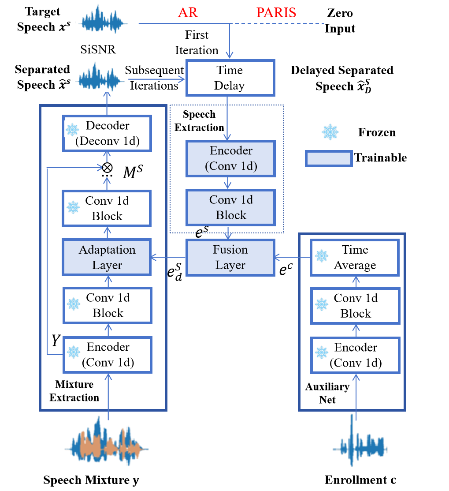

|paper|
Yiwen Wang1*, Zeyu Yuan2, Xihong Wu1
1Peking University
2Xiaomi Corporation
Target speech extraction (TSE) focuses on extracting the speech of a specific target speaker from a mixture of signals. Existing TSE models typically utilize static embeddings as conditions for extracting the target speaker’s voice. However, the static embeddings often fail to capture the contextual information of the extracted speech signal, which may limit the model’s performance. We propose a novel dynamic embedding causal target speech extraction model to address this limitation. Our approach incorporates an autoregressive mechanism to generate context-dependent embeddings based on the extracted speech, enabling real-time, frame-level extraction. Experimental results demonstrate that the proposed model enhances short-time objective intelligibility (STOI) and signal-to-distortion ratio (SDR), offering a promising solution for target speech extraction in challenging scenarios. 